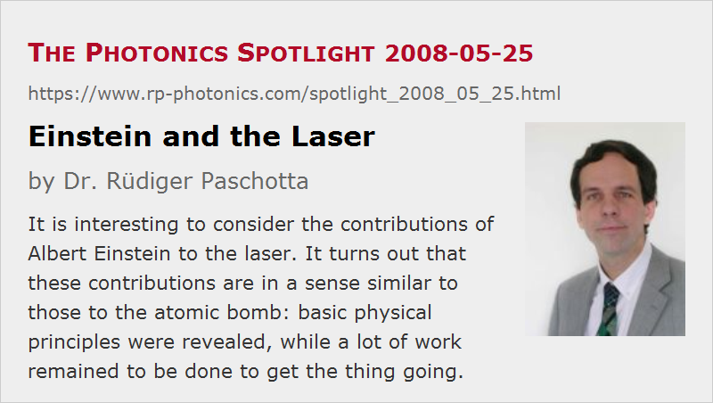

Einstein and the Laser
Posted on 2008-05-25 as a part of the Photonics Spotlight (available as e-mail newsletter!)
Permanent link: https://www.rp-photonics.com/spotlight_2008_05_25.html
Author: Dr. Rüdiger Paschotta, RP Photonics Consulting GmbH
Abstract: It is interesting to consider the contributions of Albert Einstein to the laser. It turns out that these contributions are in a sense similar to those to the atomic bomb: basic physical principles were revealed, while a lot of work remained to be done to get the thing going.

(A German version of this article appeared in the "World of Photonics" newsletter] in May 2008.)
Albert Einstein is sometimes said to be a key person for the invention of the laser. Similarly, his famous equation E = m c2 is sometimes called the key to the atomic bomb. Is that reasonable?
In one of this most important publications (“Zur Quantentheorie der Strahlung”), Einstein has described the process of stimulated emission of radiation. This means that a photon hitting some atom (or ion or molecule) may not only supply energy to this atom in an absorption process, but also send an already excited atom back to a state with lower energy. In the latter case, an additional photon is emitted. A crucial aspect is Einstein's insight that the additional photon should move in the same direction as the incoming photon. We thus have a process of light amplification: we get two photons out of one, or transform some light beam into a more energetic one. Furthermore, Einstein has realized that a net gain of optical power in some ensemble of atoms can occur only if there is a so-called population inversion: the upper energy level must be more strongly populated than the lower one, so that the effect of stimulated emission can exceed the one by absorption of atoms in the lower state. This state is often achieved by "optical pumping" e.g. of a laser crystal – an invention attributed to Alfred Kastler.
For a laser, one more thing is required: a "resonator", in which a light beam can circulate, and an amplifying medium (gain medium) can at least compensate for the power losses in each round trip. This principle was first demonstrated with microwaves (in so-called masers), and by the ground-breaking work of Schawlow, Townes and Maiman around 1960 it could also be applied to light.
As the work between 1917 and 1960 has certainly brought more than only the clarification of some minor details, it would be rather far-fetched to call Einstein the inventor of the laser. However, he has indeed realized the most important physical basis of the laser – the process of stimulated emission. This, by the way, was done not by observing physical phenomena, but via theoretical reasoning. After that, there was still a far way to the laser.
By the way, there is a similarity to the story of the nuclear bomb. According to the equation E = m c2, a huge amount of energy should be released when just a few grams of matter are converted to energy. Without doubt, this is a very important finding. Nevertheless, it is still another thing to identify a way to do this conversion. Such a way was found via the discovery of nuclear fission by the team of Lise Meitner, Otto Hahn and Fritz Strassmann in 1938, and the realization of the possibility of a nuclear chain reaction soon after. In this sense, Einstein is related to the atomic bomb perhaps more via his famous letter to president Roosevelt than by the mentioned equation. And Max Planck could present an equation (E = h ν), but no letter, and is not considered to be the father of the laser, but at most (together with Einstein) a father of the photon, which was later named so by Gilbert N. Lewis.
This article is a posting of the Photonics Spotlight, authored by Dr. Rüdiger Paschotta. You may link to this page and cite it, because its location is permanent. See also the RP Photonics Encyclopedia.
Note that you can also receive the articles in the form of a newsletter or with an RSS feed.
Questions and Comments from Users
Here you can submit questions and comments. As far as they get accepted by the author, they will appear above this paragraph together with the author’s answer. The author will decide on acceptance based on certain criteria. Essentially, the issue must be of sufficiently broad interest.
Please do not enter personal data here; we would otherwise delete it soon. (See also our privacy declaration.) If you wish to receive personal feedback or consultancy from the author, please contact him e.g. via e-mail.
By submitting the information, you give your consent to the potential publication of your inputs on our website according to our rules. (If you later retract your consent, we will delete those inputs.) As your inputs are first reviewed by the author, they may be published with some delay.
|  |
If you like this page, please share the link with your friends and colleagues, e.g. via social media:
These sharing buttons are implemented in a privacy-friendly way!